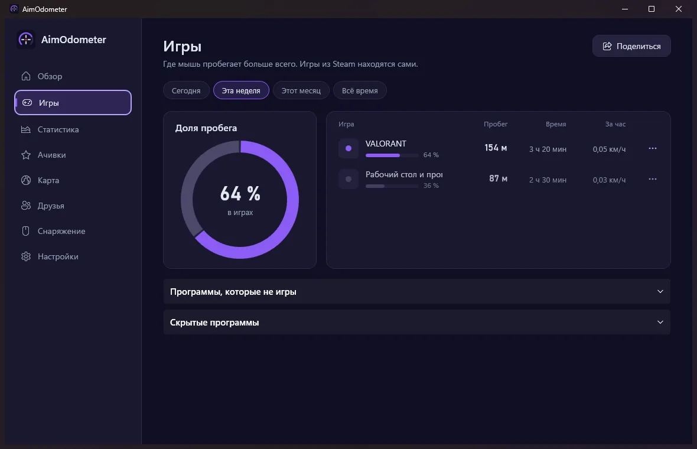
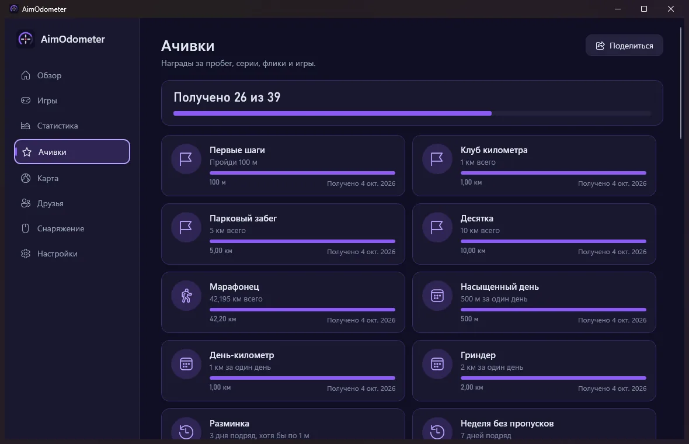
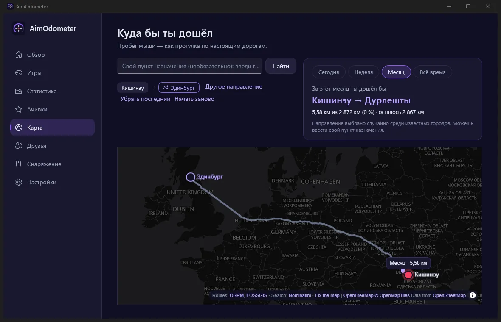
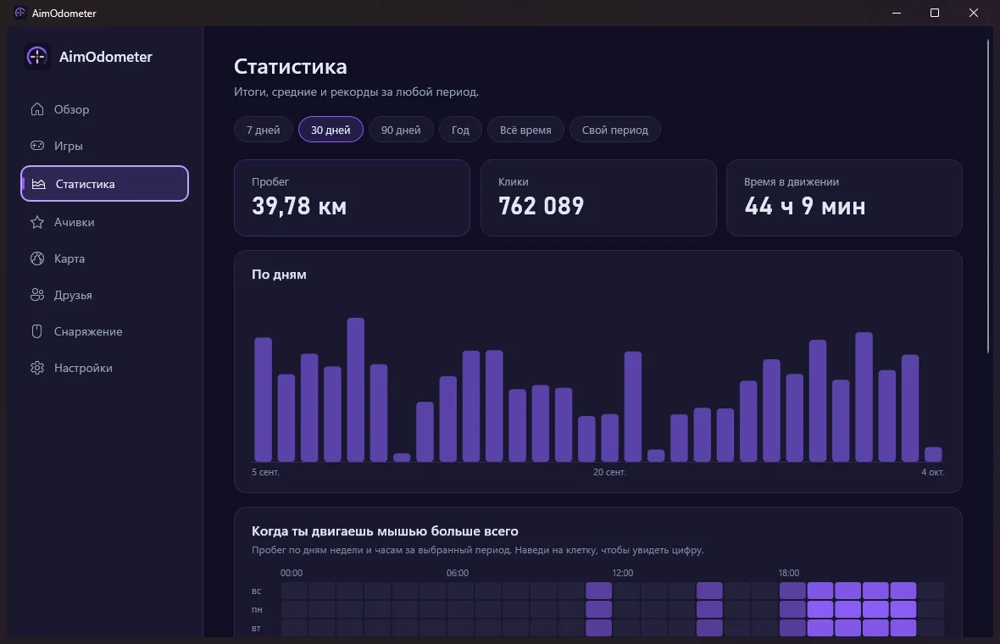

Реальный пробег
Сантиметры, метры и километры по коврику для каждой мыши, с мастером калибровки DPI (хватит линейки или банковской карты).
Бесплатно · открытый код · Windows 10/11
AimOdometer считает настоящие сантиметры, которые мышь проходит по коврику, а не пиксели на экране: по играм, по мышам, по дням. Он тихо живёт в трее и превращает твой аим в километры.

Движение читается через Windows Raw Input прямо от мыши, поэтому чувствительность в игре и разрешение экрана не важны. Важен только DPI, и AimOdometer поможет его измерить.
Сантиметры, метры и километры по коврику для каждой мыши, с мастером калибровки DPI (хватит линейки или банковской карты).
Игры Steam находятся сами, плюс ещё 55 (Riot, Epic, Battle.net…). Видно, в какой игре ты бегаешь мышью больше всего.
39 ачивок: пробег, серии, флики, ночная сова, по играм. Никогда не всплывают во время полноэкранной игры.
Твой пробег как прогулка по настоящей карте: от твоего города к известному или туда, куда выберешь.
Войди через Steam и сравнивай пробег с друзьями из Steam, а по желанию - со всем миром.
В фоне работает крошечный нативный трекер; окно с графиками открывается, только когда нужно. Обновления ставятся сами.
AimOdometer только читает мышь, как любая программа для мышей, и отмечает, какое приложение на переднем плане. Игру он не трогает.




У AimOdometer пока нет цифровой подписи. Нажми «Подробнее», затем «Выполнить в любом случае». Исходный код открыт на GitHub.
Настолько, насколько точен указанный DPI: измерь его один раз в программе линейкой или банковской картой. В Windows 11 фоновые программы получают мышь склеенной до ~125 Гц, это около 2% при очень быстром аиме; всё остальное считается точно.
Нет. Без входа через Steam AimOdometer только проверяет обновления на GitHub при открытии окна (можно отключить), а карта загружается лишь после разрешения на её вкладке.
Статистика лежит в %LOCALAPPDATA%\AimOdometer. Удалить программу можно в Параметрах Windows › Приложения; статистика останется, если не удалить её в настройках AimOdometer.